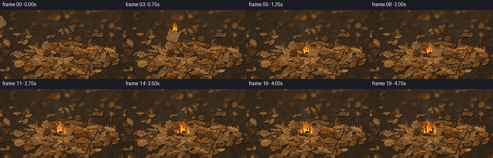
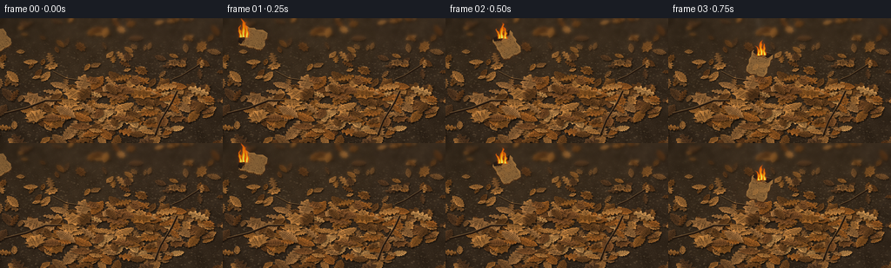

CODING AGENTS AS PIXEL WORLD MODELS
traex/GPT-6.1-Sol · material_0025
点击播放 · 原生 RGB 像素
逐轮保存的候选
回放视频、检查图与代码变化。
每份候选均可单独播放。实际图片检查记录在下方工具轨迹中。
候选 01播放与检查图
点击播放 · 原生 RGB 像素

展开代码变化
--- 上一保存版本
+++ 本次保存版本
@@ -0,0 +1,277 @@
+import json, math
+from pathlib import Path
+import numpy as np
+from PIL import Image, ImageDraw, ImageFilter
+import artifact_io
+
+ROOT = Path(__file__).resolve().parent
+SPEC = json.loads((ROOT/'task_spec.json').read_text())
+W,H = SPEC['width'],SPEC['height']
+S=3
+SW,SH=W*S,H*S
+rng=np.random.default_rng(42)
+
+def pt(p): return (int(round(p[0]*S)), int(round(p[1]*S)))
+def poly(d,p,fill): d.polygon([pt(a) for a in p], fill=fill)
+def line(d,p,fill,width=1): d.line([pt(a) for a in p],fill=fill,width=max(1,int(width*S)))
+def col(c,f): return tuple(int(np.clip(v*f,0,255)) for v in c)
+
+# Warm, naturally irregular forest-floor material.
+yy,xx=np.mgrid[0:SH,0:SW]
+X,Y=xx/S,yy/S
+noise = rng.normal(0,1,(SH,SW))
+coarse=np.array(Image.fromarray(rng.integers(0,255,(30,50),dtype=np.uint8)).resize((SW,SH),Image.Resampling.BICUBIC).filter(ImageFilter.GaussianBlur(8)),float)/255-.5
+light=.84+.15*X/W+.09*np.sin(X/85+Y/53)
+base=np.stack([59*light+18*coarse,45*light+15*coarse,31*light+12*coarse],axis=-1)
+base+=noise[:,:,None]*3.5
+scene=Image.fromarray(np.uint8(np.clip(base,0,255)))
+d=ImageDraw.Draw(scene)
+for k in range(4400):
+ x,y=rng.uniform(0,W),rng.uniform(0,H)
+ size=rng.uniform(.15,1.1)
+ cc=rng.choice([-.2,-.1,.1,.25])
+ c=col((67,53,38),1+cc)
+ d.ellipse((int((x-size)*S),int((y-size*.45)*S),int((x+size)*S),int((y+size*.5)*S)),fill=c)
+
+# Each leaf is a subtly faceted, curled surface, not a flat icon.
+leaves=[]
+def make_leaf(x,y,L,angle,kind,colour,aspect=1):
+ a=angle; cs,sn=math.cos(a),math.sin(a)
+ def tr(u,v): return (x+(u*cs-v*sn)*L, y+(u*sn+v*cs)*L*aspect)
+ if kind==0: # narrow, serrated dried beech leaf
+ n=15
+ right=[];left=[]
+ for i in range(n+1):
+ u=-.5+i/n
+ shape=max(0,math.sin(math.pi*i/n))**.72
+ v=.245*shape*(1+.13*(-1)**i)*rng.uniform(.93,1.07)
+ right.append((u,v))
+ left.append((u,-v*rng.uniform(.85,1.12)))
+ boundary=right+left[::-1]
+ elif kind==1: # crumpled oak, broad lobes
+ right=[];left=[]
+ for i in range(25):
+ u=-.5+i/24
+ amp=math.sin(math.pi*i/24)**.5
+ v=amp*(.18+.085*math.sin(i/24*math.pi*9))
+ right.append((u,v))
+ left.append((u,-v*rng.uniform(.85,1.1)))
+ boundary=right+left[::-1]
+ else: # pointed broad autumn leaf
+ boundary=[(-.50,0),(-.31,.12),(-.36,.26),(-.15,.24),(-.08,.38),(.08,.26),(.35,.22),(.25,.10),(.50,0),(.29,-.12),(.30,-.28),(.08,-.24),(-.1,-.34),(-.17,-.20),(-.37,-.18),(-.28,-.06)]
+ pts=[tr(*v) for v in boundary]
+ leaves.append((x,y,L,angle,kind,colour,aspect,pts,boundary))
+
+# Litter lies on the soil; a distinct shallow mound fills the foreground.
+for k in range(200):
+ x=rng.uniform(-10,W+10);y=rng.uniform(-10,H+12)
+ L=rng.uniform(10,24)*(0.65+.42*y/H)
+ c=rng.choice([(116,72,32),(151,97,44),(101,62,30),(169,113,57),(129,87,47),(91,61,36)])
+ make_leaf(x,y,L,rng.uniform(0,2*math.pi),rng.choice(3,p=[.5,.32,.18]),c, rng.uniform(.65,.91))
+for k in range(185):
+ a=rng.uniform(0,2*math.pi);r=math.sqrt(rng.uniform(0,1))
+ x=139+105*r*math.cos(a);y=102+35*r*math.sin(a)
+ L=rng.uniform(14,29)
+ c=rng.choice([(177,119,59),(142,88,36),(158,109,61),(124,78,40),(191,138,77),(104,66,32),(154,91,36)])
+ make_leaf(x,y,L,rng.uniform(0,2*math.pi),rng.choice(3,p=[.47,.38,.15]),c,rng.uniform(.5,.82))
+
+for (x,y,L,a,kind,c,aspect,pts,boundary) in leaves:
+ # Cast localized edge shadows; stratification creates the mound's depth.
+ shadow=Image.new('RGBA',(SW,SH))
+ sd=ImageDraw.Draw(shadow)
+ poly(sd,[(px+.9,py+1.35) for px,py in pts],(13,8,3,135))
+ shadow=shadow.filter(ImageFilter.GaussianBlur(.58*S))
+ scene=Image.alpha_composite(scene.convert('RGBA'),shadow).convert('RGB')
+ d=ImageDraw.Draw(scene)
+ poly(d,pts,col(c,.73))
+ cs,sn=math.cos(a),math.sin(a)
+ def tr(u,v): return (x+(u*cs-v*sn)*L,y+(u*sn+v*cs)*L*aspect)
+ # A folded central rib, randomized triangles, and tiny broken secondary veins.
+ for j in range(len(boundary)-1):
+ u,v=boundary[j];u2,v2=boundary[j+1]
+ center=tr((u+u2)/2,.015*math.sin(u*9))
+ brightness=(.89 if v>0 else 1.13)+rng.uniform(-.1,.1)
+ poly(d,[center,pts[j],pts[j+1]],col(c,brightness))
+ spine=[tr(u,.018*math.sin(u*8+.4)) for u in np.linspace(-.45,.47,9)]
+ line(d,spine,col(c,.52),.26)
+ line(d,[(q[0],q[1]-.20) for q in spine],col(c,1.31),.2)
+ for u in np.linspace(-.32,.32,6):
+ for side in [-1,1]:
+ amp=.23*max(.1,math.sin(math.pi*(u+.5)))
+ line(d,[tr(u,0),tr(u+.055,side*amp*.55),tr(u+.08,side*amp*.95)],col(c,.72),.16)
+ if rng.random()<.7:
+ line(d,[tr(u+.035,side*amp*.43),tr(u-.02,side*amp*.7)],col(c,.83),.14)
+ # Curl glint, occasional natural holes and weather stains.
+ js=rng.integers(1,len(pts)-4)
+ line(d,pts[js:js+4],col(c,1.34),.30)
+ for k in range(rng.integers(2,6)):
+ u,v=rng.uniform(-.31,.3),rng.uniform(-.11,.11)
+ q=tr(u,v);rad=rng.uniform(.18,.57)
+ d.ellipse((int((q[0]-rad)*S),int((q[1]-rad*.6)*S),int((q[0]+rad)*S),int((q[1]+rad*.6)*S)),fill=col(c,rng.uniform(.42,.7)))
+ line(d,[tr(-.49,0),tr(-.66,.015)],(82,56,31),.4)
+
+# Some real thin twigs atop the litter.
+d=ImageDraw.Draw(scene)
+for pts,w in [([(5,109),(29,103),(52,94),(70,94)],1.0), ([(177,135),(184,117),(197,96),(203,83)],.9), ([(61,61),(76,69),(91,71)],.6), ([(229,53),(208,66),(198,70)],.6)]:
+ line(d,[(x+.6,y+.8) for x,y in pts],(35,23,15),w+1)
+ line(d,pts,(92,67,42),w)
+ line(d,[(x,y-.25) for x,y in pts],(142,107,65),.25)
+
+# Depth of field: far litter softly defocused, central pile crisp.
+a=np.array(scene,float)
+blur=np.array(scene.filter(ImageFilter.GaussianBlur(1.7*S)),float)
+focus=np.clip((51-Y)/32,0,1)[...,None]*.93
+scene=Image.fromarray(np.uint8(a*(1-focus)+blur*focus))
+BACKGROUND=np.array(scene,float)
+
+# Smooth deterministic turbulent gas textures, animated without random frame jitter.
+tex=rng.random((192,192))
+def noise2(x,y):
+ x=np.mod(x,192);y=np.mod(y,192)
+ ix=x.astype(int);iy=y.astype(int);fx=x-ix;fy=y-iy
+ fx=fx*fx*(3-2*fx);fy=fy*fy*(3-2*fy)
+ return (tex[iy,ix]*(1-fx)*(1-fy)+tex[iy,(ix+1)%192]*fx*(1-fy)+tex[(iy+1)%192,ix]*(1-fx)*fy+tex[(iy+1)%192,(ix+1)%192]*fx*fy)
+
+# The torn cardboard, with a papery face and exposed corrugated edge.
+card_edge=[(-.51,-.39),(-.35,-.43),(-.25,-.38),(-.05,-.42),(.05,-.36),(.28,-.42),(.49,-.34),(.51,-.13),(.45,-.04),(.52,.17),(.45,.35),(.28,.40),(.13,.36),(-.04,.41),(-.18,.36),(-.39,.41),(-.5,.29),(-.45,.12),(-.53,-.06)]
+card_tex=rng.normal(0,1,(SH,SW))
+
+def cardboard(t,cx,cy,rot,landed):
+ layer=Image.new('RGBA',(SW,SH));d=ImageDraw.Draw(layer)
+ cs,sn=math.cos(rot),math.sin(rot)
+ length=30
+ aspect=.63 if landed else .93
+ def tr(u,v):return (cx+length*(u*cs-v*sn),cy+length*aspect*(u*sn+v*cs))
+ points=[tr(u,v) for u,v in card_edge]
+ lower=[(x,y+1.15) for x,y in points]
+ poly(d,lower,(78,45,20,255))
+ for u in np.arange(-.46,.47,.062):
+ q=tr(u,.37);line(d,[(q[0],q[1]),(q[0],q[1]+1.2)],(204,149,76,255),.35)
+ poly(d,points,(158,113,61,255))
+ # Thin face shading and directional fiber fibers.
+ for u in np.arange(-.48,.49,.029):
+ b=rng.uniform(.83,1.17)
+ line(d,[tr(u,-.34),tr(u,.34)],col((164,121,69),b)+(100,),.12)
+ for k in range(95):
+ u,v=rng.uniform(-.46,.46),rng.uniform(-.32,.32)
+ q=tr(u,v);line(d,[q,(q[0]+rng.uniform(.2,.7),q[1]+.07)],(103,70,35,75),.15)
+ # Char spreads inwards from the already alight ragged edge.
+ burn=min(.37,.10+.045*t)
+ bp=[tr(-.51,-.39),tr(-.51,.31),tr(-.38,.36),tr(-.46+burn,.26),tr(-.40+burn,.1),tr(-.49+burn,-.08),tr(-.43+burn,-.25)]
+ poly(d,bp,(35,26,20,255))
+ line(d,[tr(-.42+burn,.3),tr(-.39+burn,.13),tr(-.45+burn,-.02),tr(-.40+burn,-.23)],(73,40,21,255),.9)
+ for k in range(12):
+ u=rng.uniform(-.49,-.45+burn);v=rng.uniform(-.25,.25)
+ q=tr(u,v)
+ line(d,[q,(q[0]+rng.uniform(.4,1.0),q[1]+.4)],(108,71,40,255),.15)
+ return layer,tr(-.37,.02)
+
+
+def fire(arr,t,emitters):
+ gas=np.zeros((SH,SW));core=np.zeros_like(gas)
+ for bx,by,height,width,seed in emitters:
+ z=(by-Y)/height
+ zz=np.clip(z,0,1)
+ sway=(np.sin(z*6.7-t*6.8+seed)*1.7+np.sin(z*14-t*9+seed)*.7)*zz + zz**1.6*(-1.6+1.5*math.sin(t*3+seed))
+ rad=width*(1-zz)**.72*(.83+.20*np.sin(z*15-t*11+seed))+.2
+ dx=X-(bx+sway)
+ turb=noise2(X*.58+seed*11,Y*.38+t*9)+.48*noise2(X*1.38+7,Y*.8+t*15)
+ shape=(1-(abs(dx)/np.maximum(.1,rad))**1.7)+(turb-.78)*.65
+ inside=(z>=-.05)&(z<1)
+ density=np.clip(shape*2.3,0,1)*inside*np.clip((1-z)*6,0,1)
+ gas=1-(1-gas)*(1-density)
+ c=np.clip(1-abs(dx)/(rad*.58),0,1)*np.clip(1-z*1.32,0,1)*inside
+ core=np.maximum(core,c)
+ # Feather the outline by subpixel smoothing, bright irregular flame tongues.
+ ga=np.array(Image.fromarray(np.uint8(gas*255)).filter(ImageFilter.GaussianBlur(.25*S)),float)/255
+ colors=np.empty_like(arr)
+ colors[:,:,0]=255
+ colors[:,:,1]=83+157*np.clip(core*1.48,0,1)+22*ga
+ colors[:,:,2]=7+118*np.clip((core-.3)*1.8,0,1)
+ alpha=ga*.91
+ # Soft luminous orange halo is additive, not an opaque blob.
+ halo=np.array(Image.fromarray(np.uint8(ga*255)).filter(ImageFilter.GaussianBlur(2.6*S)),float)/255
+ arr+=halo[:,:,None]*np.array([55,20,2])[None,None,:]
+ arr=arr*(1-alpha[:,:,None])+np.clip(colors,0,255)*alpha[:,:,None]
+ return arr
+
+frames=[]
+for i in range(SPEC['frames']):
+ t=i/SPEC['fps']
+ landed=t>=1
+ if not landed:
+ u=t
+ cx=-4+159*u-20*u*u
+ cy=27-42*u+100*u*u
+ rot=-.55+u*3.25
+ else:
+ settle=math.exp(-(t-1)*13)
+ cx=135+1.3*settle*math.sin((t-1)*15)
+ cy=88-2*settle*math.sin((t-1)*17)
+ rot=.27+.14*settle*math.cos((t-1)*20)
+ arr=BACKGROUND.copy()
+ # Contact shadow, and gradual darkening of several leaves immediately below.
+ if landed:
+ q=np.exp(-(((X-133)/23)**2+((Y-89)/11)**2))
+ dark=min(.40,(t-1)*.1)
+ arr*=1-q[:,:,None]*dark
+ groundy=89
+ sh=np.exp(-(((X-cx)/17)**2+((Y-groundy)/5)**2))
+ arr*=1-sh[:,:,None]*(.22 if landed else .1+.10*t)
+ # Amber reflections on dry leaves adjacent to the fire.
+ heat=(.5+.07*math.sin(t*21))* (1 if landed else .35)
+ glow=np.exp(-(((X-(cx-6))/26)**2+((Y-(cy+3))/15)**2))
+ arr+=glow[:,:,None]*np.array([29,11,-1])[None,None,:]*heat
+ im=Image.fromarray(np.uint8(np.clip(arr,0,255))).convert('RGBA')
+ # Keep material fibers stable between frames.
+ state=rng.bit_generator.state
+ rng.bit_generator.state=np.random.default_rng(888).bit_generator.state
+ card,anchor=cardboard(t,cx,cy,rot,landed)
+ rng.bit_generator.state=state
+ im=Image.alpha_composite(im,card)
+ arr=np.array(im.convert('RGB'),float)
+ bx,by=anchor
+ # Thin rising smoke curls, drifting up/left in the same light breeze.
+ smoke=np.zeros((SH,SW))
+ for k in range(14):
+ age=((t*.65+k*.123)%1.7)
+ if t<.65 and age>t+.15: continue
+ elev=age*28
+ sx=bx-4*age+2.5*math.sin(age*3+t*1.3+k)
+ sy=by-elev-10
+ radius=2.8+age*4.5
+ den=np.exp(-((X-sx)/(radius*1.0))**2-((Y-sy)/(radius*1.3))**2)
+ detail=.3+.7*noise2(X*.16+t*.5,Y*.16+t*3)
+ smoke+=den*detail*.043*(1-age/2.2)*(min(1,t+.35))
+ alpha=np.clip(smoke,0,.20)
+ arr=arr*(1-alpha[:,:,None])+np.array([169,168,160])[None,None,:]*alpha[:,:,None]
+ baseheight=18+3*math.sin(t*4.8)+2*math.sin(t*9.1)
+ emitters=[(bx,by,baseheight,3.5,0), (bx+3.9,by+.5,baseheight*.8,2.6,1.6), (bx-3,by+.8,baseheight*.66,2.5,3.4)]
+ if landed:
+ progress=max(0,t-1.35)
+ # Sustained small ignition begins in the loose leaves around the fragment.
+ emitters += [(bx-3.8,by+3.2,13+progress*4+3*math.sin(t*5.5),2.8+progress*.4,4.7)]
+ if progress>1:
+ emitters.append((bx+11,by+5,10+(progress-1)*6+2*math.sin(t*8),2.7,7.2))
+ if progress>2.1:
+ emitters.append((bx-10,by+5,9+(progress-2)*8+2*math.sin(t*7),2.5,8.5))
+ arr=fire(arr,t,emitters)
+ # Flecks of glowing ash rise and dim, instead of a shower of decorative sparks.
+ sparks=Image.new('RGBA',(SW,SH));sd=ImageDraw.Draw(sparks)
+ if t>1:
+ for k in range(3):
+ age=(t*1.15+k*.51)%1.7
+ if age>.95: continue
+ sx=bx+math.sin(k*14+age*3)*4-age*3
+ sy=by-age*27
+ r=.22+.14*(1-age)
+ sd.ellipse((int((sx-r)*S),int((sy-r)*S),int((sx+r)*S),int((sy+r)*S)),fill=(255,151,35,int(155*(1-age))))
+ out=Image.alpha_composite(Image.fromarray(np.uint8(np.clip(arr,0,255))).convert('RGBA'),sparks).convert('RGB')
+ # Gentle lens vignetting and a photographic, unchanging fine grain.
+ ar=np.array(out,float)
+ vignette=1-.15*((X-W/2)/(W*.73))**2-.10*((Y-H/2)/(H*.8))**2
+ ar=ar*vignette[:,:,None]+noise[:,:,None]*.65
+ out=Image.fromarray(np.uint8(np.clip(ar,0,255))).resize((W,H),Image.Resampling.LANCZOS)
+ frames.append(np.array(out))
+artifact_io.save(np.stack(frames).astype(np.uint8),ROOT)
+print('Saved',len(frames),'RGB frames.')
候选 02播放与检查图
点击播放 · 原生 RGB 像素


展开代码变化
--- 上一保存版本
+++ 本次保存版本
@@ -139,7 +139,7 @@
def cardboard(t,cx,cy,rot,landed):
layer=Image.new('RGBA',(SW,SH));d=ImageDraw.Draw(layer)
cs,sn=math.cos(rot),math.sin(rot)
- length=30
+ length=34
aspect=.63 if landed else .93
def tr(u,v):return (cx+length*(u*cs-v*sn),cy+length*aspect*(u*sn+v*cs))
points=[tr(u,v) for u,v in card_edge]
@@ -147,14 +147,18 @@
poly(d,lower,(78,45,20,255))
for u in np.arange(-.46,.47,.062):
q=tr(u,.37);line(d,[(q[0],q[1]),(q[0],q[1]+1.2)],(204,149,76,255),.35)
- poly(d,points,(158,113,61,255))
+ poly(d,points,(192,151,98,255))
# Thin face shading and directional fiber fibers.
for u in np.arange(-.48,.49,.029):
b=rng.uniform(.83,1.17)
- line(d,[tr(u,-.34),tr(u,.34)],col((164,121,69),b)+(100,),.12)
+ line(d,[tr(u,-.34),tr(u,.34)],col((194,153,99),b)+(100,),.12)
for k in range(95):
u,v=rng.uniform(-.46,.46),rng.uniform(-.32,.32)
q=tr(u,v);line(d,[q,(q[0]+rng.uniform(.2,.7),q[1]+.07)],(103,70,35,75),.15)
+ # Faint straight scoring and a slight bend distinguish cardboard from leaves.
+ line(d,[tr(-.35,-.14),tr(.42,-.14)],(149,111,65,125),.35)
+ line(d,[tr(-.34,-.13),tr(.42,-.13)],(224,183,126,150),.20)
+ line(d,[tr(.28,-.33),tr(.28,.32)],(151,109,61,65),.25)
# Char spreads inwards from the already alight ragged edge.
burn=min(.37,.10+.045*t)
bp=[tr(-.51,-.39),tr(-.51,.31),tr(-.38,.36),tr(-.46+burn,.26),tr(-.40+burn,.1),tr(-.49+burn,-.08),tr(-.43+burn,-.25)]
@@ -201,7 +205,7 @@
landed=t>=1
if not landed:
u=t
- cx=-4+159*u-20*u*u
+ cx=15+140*u-20*u*u
cy=27-42*u+100*u*u
rot=-.55+u*3.25
else:
候选 03播放与检查图
可观测工具轨迹
实际执行的命令与返回图片。
命令 1exit 0
/bin/bash -lc 'ls -la; cat prompt.txt; cat GENERATION_RULES.md; cat task_spec.json'
命令 2exit 0
/bin/bash -lc 'cat artifact_io.py; ls .tmp'
命令 3exit 0
/bin/bash -lc "cat > generate.py <<'PY'
import json, math
from pathlib import Path
import numpy as np
from PIL import Image, ImageDraw, ImageFilter
import artifact_io
ROOT = Path(__file__).resolve().parent
SPEC = json.loads((ROOT/'task_spec.json').read_text())
W,H = SPEC['width'],SPEC['height']
S=3
SW,SH=W*S,H*S
rng=np.random.default_rng(42)
def pt(p): return (int(round(p[0]*S)), int(round(p[1]*S)))
def poly(d,p,fill): d.polygon([pt(a) for a in p], fill=fill)
def line(d,p,fill,width=1): d.line([pt(a) for a in p],fill=fill,width=max(1,int(width*S)))
def col(c,f): return tuple(int(np.clip(v*f,0,255)) for v in c)
# Warm, naturally irregular forest-floor material.
yy,xx=np.mgrid[0:SH,0:SW]
X,Y=xx/S,yy/S
noise = rng.normal(0,1,(SH,SW))
coarse=np.array(Image.fromarray(rng.integers(0,255,(30,50),dtype=np.uint8)).resize((SW,SH),Image.Resampling.BICUBIC).filter(ImageFilter.GaussianBlur(8)),float)/255-.5
light=.84+.15*X/W+.09*np.sin(X/85+Y/53)
base=np.stack([59*light+18*coarse,45*light+15*coarse,31*light+12*coarse],axis=-1)
base+=noise[:,:,None]*3.5
scene=Image.fromarray(np.uint8(np.clip(base,0,255)))
d=ImageDraw.Draw(scene)
for k in range(4400):
x,y=rng.uniform(0,W),rng.uniform(0,H)
size=rng.uniform(.15,1.1)
cc=rng.choice([-.2,-.1,.1,.25])
c=col((67,53,38),1+cc)
d.ellipse((int((x-size)*S),int((y-size*.45)*S),int((x+size)*S),int((y+size*.5)*S)),fill=c)
# Each leaf is a subtly faceted, curled surface, not a flat icon.
leaves=[]
def make_leaf(x,y,L,angle,kind,colour,aspect=1):
a=angle; cs,sn=math.cos(a),math.sin(a)
def tr(u,v): return (x+(u*cs-v*sn)*L, y+(u*sn+v*cs)*L*aspect)
if kind==0: # narrow, serrated dried beech leaf
n=15
right=[];left=[]
for i in range(n+1):
u=-.5+i/n
shape=max(0,math.sin(math.pi*i/n))**.72
v=.245*shape*(1+.13*(-1)**i)*rng.uniform(.93,1.07)
right.append((u,v))
left.append((u,-v*rng.uniform(.85,1.12)))
boundary=right+left[::-1]
elif kind==1: # crumpled oak, broad lobes
right=[];left=[]
for i in range(25):
u=-.5+i/24
amp=math.sin(math.pi*i/24)**.5
v=amp*(.18+.085*math.sin(i/24*math.pi*9))
right.append((u,v))
left.append((u,-v*rng.uniform(.85,1.1)))
boundary=right+left[::-1]
else: # pointed broad autumn leaf
boundary=[(-.50,0),(-.31,.12),(-.36,.26),(-.15,.24),(-.08,.38),(.08,.26),(.35,.22),(.25,.10),(.50,0),(.29,-.12),(.30,-.28),(.08,-.24),(-.1,-.34),(-.17,-.20),(-.37,-.18),(-.28,-.06)]
pts=[tr(*v) for v in boundary]
leaves.append((x,y,L,angle,kind,colour,aspect,pts,boundary))
# Litter lies on the soil; a distinct shallow mound fills the foreground.
for k in range(200):
x=rng.uniform(-10,W+10);y=rng.uniform(-10,H+12)
L=rng.uniform(10,24)*(0.65+.42*y/H)
c=rng.choice([(116,72,32),(151,97,44),(101,62,30),(169,113,57),(129,87,47),(91,61,36)])
make_leaf(x,y,L,rng.uniform(0,2*math.pi),rng.choice(3,p=[.5,.32,.18]),c, rng.uniform(.65,.91))
for k in range(185):
a=rng.uniform(0,2*math.pi);r=math.sqrt(rng.uniform(0,1))
x=139+105*r*math.cos(a);y=102+35*r*math.sin(a)
L=rng.uniform(14,29)
c=rng.choice([(177,119,59),(142,88,36),(158,109,61),(124,78,40),(191,138,77),(104,66,32),(154,91,36)])
make_leaf(x,y,L,rng.uniform(0,2*math.pi),rng.choice(3,p=[.47,.38,.15]),c,rng.uniform(.5,.82))
for (x,y,L,a,kind,c,aspect,pts,boundary) in leaves:
# Cast localized edge shadows; stratification creates the mound's depth.
shadow=Image.new('RGBA',(SW,SH))
sd=ImageDraw.Draw(shadow)
poly(sd,[(px+.9,py+1.35) for px,py in pts],(13,8,3,135))
shadow=shadow.filter(ImageFilter.GaussianBlur(.58*S))
scene=Image.alpha_composite(scene.convert('RGBA'),shadow).convert('RGB')
d=ImageDraw.Draw(scene)
poly(d,pts,col(c,.73))
cs,sn=math.cos(a),math.sin(a)
def tr(u,v): return (x+(u*cs-v*sn)*L,y+(u*sn+v*cs)*L*aspect)
# A folded central rib, randomized triangles, and tiny broken secondary veins.
for j in range(len(boundary)-1):
u,v=boundary[j];u2,v2=boundary[j+1]
center=tr((u+u2)/2,.015*math.sin(u*9))
brightness=(.89 if v>0 else 1.13)+rng.uniform(-.1,.1)
poly(d,[center,pts[j],pts[j+1]],col(c,brightness))
spine=[tr(u,.018*math.sin(u*8+.4)) for u in np.linspace(-.45,.47,9)]
line(d,spine,col(c,.52),.26)
line(d,[(q[0],q[1]-.20) for q in spine],col(c,1.31),.2)
for u in np.linspace(-.32,.32,6):
for side in [-1,1]:
amp=.23*max(.1,math.sin(math.pi*(u+.5)))
line(d,[tr(u,0),tr(u+.055,side*amp*.55),tr(u+.08,side*amp*.95)],col(c,.72),.16)
if rng.random()<.7:
line(d,[tr(u+.035,side*amp*.43),tr(u-.02,side*amp*.7)],col(c,.83),.14)
# Curl glint, occasional natural holes and weather stains.
js=rng.integers(1,len(pts)-4)
line(d,pts[js:js+4],col(c,1.34),.30)
for k in range(rng.integers(2,6)):
u,v=rng.uniform(-.31,.3),rng.uniform(-.11,.11)
q=tr(u,v);rad=rng.uniform(.18,.57)
d.ellipse((int((q[0]-rad)*S),int((q[1]-rad*.6)*S),int((q[0]+rad)*S),int((q[1]+rad*.6)*S)),fill=col(c,rng.uniform(.42,.7)))
line(d,[tr(-.49,0),tr(-.66,.015)],(82,56,31),.4)
# Some real thin twigs atop the litter.
d=ImageDraw.Draw(scene)
for pts,w in [([(5,109),(29,103),(52,94),(70,94)],1.0), ([(177,135),(184,117),(197,96),(203,83)],.9), ([(61,61),(76,69),(91,71)],.6), ([(229,53),(208,66),(198,70)],.6)]:
line(d,[(x+.6,y+.8) for x,y in pts],(35,23,15),w+1)
line(d,pts,(92,67,42),w)
line(d,[(x,y-.25) for x,y in pts],(142,107,65),.25)
# Depth of field: far litter softly defocused, central pile crisp.
a=np.array(scene,float)
blur=np.array(scene.filter(ImageFilter.GaussianBlur(1.7*S)),float)
focus=np.clip((51-Y)/32,0,1)[...,None]*.93
scene=Image.fromarray(np.uint8(a*(1-focus)+blur*focus))
BACKGROUND=np.array(scene,float)
# Smooth deterministic turbulent gas textures, animated without random frame jitter.
tex=rng.random((192,192))
def noise2(x,y):
x=np.mod(x,192);y=np.mod(y,192)
ix=x.astype(int);iy=y.astype(int);fx=x-ix;fy=y-iy
fx=fx*fx*(3-2*fx);fy=fy*fy*(3-2*fy)
return (tex[iy,ix]*(1-fx)*(1-fy)+tex[iy,(ix+1)%192]*fx*(1-fy)+tex[(iy+1)%192,ix]*(1-fx)*fy+tex[(iy+1)%192,(ix+1)%192]*fx*fy)
# The torn cardboard, with a papery face and exposed corrugated edge.
card_edge=[(-.51,-.39),(-.35,-.43),(-.25,-.38),(-.05,-.42),(.05,-.36),(.28,-.42),(.49,-.34),(.51,-.13),(.45,-.04),(.52,.17),(.45,.35),(.28,.40),(.13,.36),(-.04,.41),(-.18,.36),(-.39,.41),(-.5,.29),(-.45,.12),(-.53,-.06)]
card_tex=rng.normal(0,1,(SH,SW))
def cardboard(t,cx,cy,rot,landed):
layer=Image.new('RGBA',(SW,SH));d=ImageDraw.Draw(layer)
cs,sn=math.cos(rot),math.sin(rot)
length=30
aspect=.63 if landed else .93
def tr(u,v):return (cx+length*(u*cs-v*sn),cy+length*aspect*(u*sn+v*cs))
points=[tr(u,v) for u,v in card_edge]
lower=[(x,y+1.15) for x,y in points]
poly(d,lower,(78,45,20,255))
for u in np.arange(-.46,.47,.062):
q=tr(u,.37);line(d,[(q[0],q[1]),(q[0],q[1]+1.2)],(204,149,76,255),.35)
poly(d,points,(158,113,61,255))
# Thin face shading and directional fiber fibers.
for u in np.arange(-.48,.49,.029):
b=rng.uniform(.83,1.17)
line(d,[tr(u,-.34),tr(u,.34)],col((164,121,69),b)+(100,),.12)
for k in range(95):
u,v=rng.uniform(-.46,.46),rng.uniform(-.32,.32)
q=tr(u,v);line(d,[q,(q[0]+rng.uniform(.2,.7),q[1]+.07)],(103,70,35,75),.15)
# Char spreads inwards from the already alight ragged edge.
burn=min(.37,.10+.045*t)
bp=[tr(-.51,-.39),tr(-.51,.31),tr(-.38,.36),tr(-.46+burn,.26),tr(-.40+burn,.1),tr(-.49+burn,-.08),tr(-.43+burn,-.25)]
poly(d,bp,(35,26,20,255))
line(d,[tr(-.42+burn,.3),tr(-.39+burn,.13),tr(-.45+burn,-.02),tr(-.40+burn,-.23)],(73,40,21,255),.9)
for k in range(12):
u=rng.uniform(-.49,-.45+burn);v=rng.uniform(-.25,.25)
q=tr(u,v)
line(d,[q,(q[0]+rng.uniform(.4,1.0),q[1]+.4)],(108,71,40,255),.15)
return layer,tr(-.37,.02)
def fire(arr,t,emitters):
gas=np.zeros((SH,SW));core=np.zeros_like(gas)
for bx,by,height,width,seed in emitters:
z=(by-Y)/height
zz=np.clip(z,0,1)
sway=(np.sin(z*6.7-t*6.8+seed)*1.7+np.sin(z*14-t*9+seed)*.7)*zz + zz**1.6*(-1.6+1.5*math.sin(t*3+seed))
rad=width*(1-zz)**.72*(.83+.20*np.sin(z*15-t*11+seed))+.2
dx=X-(bx+sway)
turb=noise2(X*.58+seed*11,Y*.38+t*9)+.48*noise2(X*1.38+7,Y*.8+t*15)
shape=(1-(abs(dx)/np.maximum(.1,rad))**1.7)+(turb-.78)*.65
inside=(z>=-.05)&(z<1)
density=np.clip(shape*2.3,0,1)*inside*np.clip((1-z)*6,0,1)
gas=1-(1-gas)*(1-density)
c=np.clip(1-abs(dx)/(rad*.58),0,1)*np.clip(1-z*1.32,0,1)*inside
core=np.maximum(core,c)
# Feather the outline by subpixel smoothing, bright irregular flame tongues.
ga=np.array(Image.fromarray(np.uint8(gas*255)).filter(ImageFilter.GaussianBlur(.25*S)),float)/255
colors=np.empty_like(arr)
colors[:,:,0]=255
colors[:,:,1]=83+157*np.clip(core*1.48,0,1)+22*ga
colors[:,:,2]=7+118*np.clip((core-.3)*1.8,0,1)
alpha=ga*.91
# Soft luminous orange halo is additive, not an opaque blob.
halo=np.array(Image.fromarray(np.uint8(ga*255)).filter(ImageFilter.GaussianBlur(2.6*S)),float)/255
arr+=halo[:,:,None]*np.array([55,20,2])[None,None,:]
arr=arr*(1-alpha[:,:,None])+np.clip(colors,0,255)*alpha[:,:,None]
return arr
frames=[]
for i in range(SPEC['frames']):
t=i/SPEC['fps']
landed=t>=1
if not landed:
u=t
cx=-4+159*u-20*u*u
cy=27-42*u+100*u*u
rot=-.55+u*3.25
else:
settle=math.exp(-(t-1)*13)
cx=135+1.3*settle*math.sin((t-1)*15)
cy=88-2*settle*math.sin((t-1)*17)
rot=.27+.14*settle*math.cos((t-1)*20)
arr=BACKGROUND.copy()
# Contact shadow, and gradual darkening of several leaves immediately below.
if landed:
q=np.exp(-(((X-133)/23)**2+((Y-89)/11)**2))
dark=min(.40,(t-1)*.1)
arr*=1-q[:,:,None]*dark
groundy=89
sh=np.exp(-(((X-cx)/17)**2+((Y-groundy)/5)**2))
arr*=1-sh[:,:,None]*(.22 if landed else .1+.10*t)
# Amber reflections on dry leaves adjacent to the fire.
heat=(.5+.07*math.sin(t*21))* (1 if landed else .35)
glow=np.exp(-(((X-(cx-6))/26)**2+((Y-(cy+3))/15)**2))
arr+=glow[:,:,None]*np.array([29,11,-1])[None,None,:]*heat
im=Image.fromarray(np.uint8(np.clip(arr,0,255))).convert('RGBA')
# Keep material fibers stable between frames.
state=rng.bit_generator.state
rng.bit_generator.state=np.random.default_rng(888).bit_generator.state
card,anchor=cardboard(t,cx,cy,rot,landed)
rng.bit_generator.state=state
im=Image.alpha_composite(im,card)
arr=np.array(im.convert('RGB'),float)
bx,by=anchor
# Thin rising smoke curls, drifting up/left in the same light breeze.
smoke=np.zeros((SH,SW))
for k in range(14):
age=((t*.65+k*.123)%1.7)
if t<.65 and age>t+.15: continue
elev=age*28
sx=bx-4*age+2.5*math.sin(age*3+t*1.3+k)
sy=by-elev-10
radius=2.8+age*4.5
den=np.exp(-((X-sx)/(radius*1.0))**2-((Y-sy)/(radius*1.3))**2)
detail=.3+.7*noise2(X*.16+t*.5,Y*.16+t*3)
smoke+=den*detail*.043*(1-age/2.2)*(min(1,t+.35))
alpha=np.clip(smoke,0,.20)
arr=arr*(1-alpha[:,:,None])+np.array([169,168,160])[None,None,:]*alpha[:,:,None]
baseheight=18+3*math.sin(t*4.8)+2*math.sin(t*9.1)
emitters=[(bx,by,baseheight,3.5,0), (bx+3.9,by+.5,baseheight*.8,2.6,1.6), (bx-3,by+.8,baseheight*.66,2.5,3.4)]
if landed:
progress=max(0,t-1.35)
# Sustained small ignition begins in the loose leaves around the fragment.
emitters += [(bx-3.8,by+3.2,13+progress*4+3*math.sin(t*5.5),2.8+progress*.4,4.7)]
if progress>1:
emitters.append((bx+11,by+5,10+(progress-1)*6+2*math.sin(t*8),2.7,7.2))
if progress>2.1:
emitters.append((bx-10,by+5,9+(progress-2)*8+2*math.sin(t*7),2.5,8.5))
arr=fire(arr,t,emitters)
# Flecks of glowing ash rise and dim, instead of a shower of decorative sparks.
sparks=Image.new('RGBA',(SW,SH));sd=ImageDraw.Draw(sparks)
if t>1:
for k in range(3):
age=(t*1.15+k*.51)%1.7
if age>.95: continue
sx=bx+math.sin(k*14+age*3)*4-age*3
sy=by-age*27
r=.22+.14*(1-age)
sd.ellipse((int((sx-r)*S),int((sy-r)*S),int((sx+r)*S),int((sy+r)*S)),fill=(255,151,35,int(155*(1-age))))
out=Image.alpha_composite(Image.fromarray(np.uint8(np.clip(arr,0,255))).convert('RGBA'),sparks).convert('RGB')
# Gentle lens vignetting and a photographic, unchanging fine grain.
ar=np.array(out,float)
vignette=1-.15*((X-W/2)/(W*.73))**2-.10*((Y-H/2)/(H*.8))**2
ar=ar*vignette[:,:,None]+noise[:,:,None]*.65
out=Image.fromarray(np.uint8(np.clip(ar,0,255))).resize((W,H),Image.Resampling.LANCZOS)
frames.append(np.array(out))
artifact_io.save(np.stack(frames).astype(np.uint8),ROOT)
print('Saved',len(frames),'RGB frames.')
PY
python generate.py"命令 4exit 0
/bin/bash -lc "python - <<'PY'
p='generate.py'
s=open(p).read().replace('length=30','length=34').replace(\"poly(d,points,(158,113,61,255))\",\"poly(d,points,(192,151,98,255))\").replace(\"col((164,121,69),b)+(100,)\",\"col((194,153,99),b)+(100,)\").replace('cx=-4+159*u-20*u*u','cx=15+140*u-20*u*u')
s=s.replace(' # Char spreads inwards from the already alight ragged edge.', ''' # Faint straight scoring and a slight bend distinguish cardboard from leaves.
line(d,[tr(-.35,-.14),tr(.42,-.14)],(149,111,65,125),.35)
line(d,[tr(-.34,-.13),tr(.42,-.13)],(224,183,126,150),.20)
line(d,[tr(.28,-.33),tr(.28,.32)],(151,109,61,65),.25)
# Char spreads inwards from the already alight ragged edge.''')
open(p,'w').write(s)
PY
python generate.py"视觉工具实际返回图片 1

保存候选 3 份；完成命令 4 次；可验证图片返回 1 张。原始 API 响应与完整日志保留在本地。